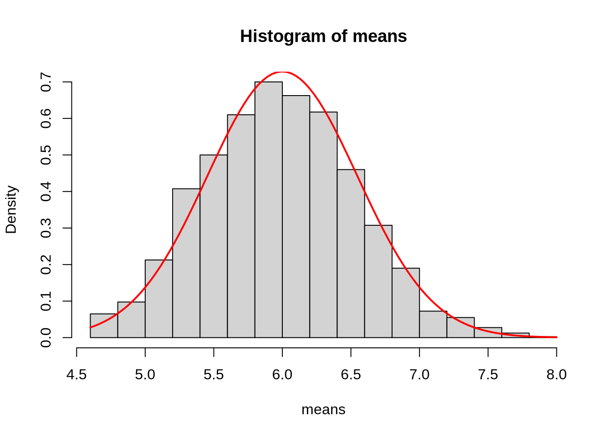
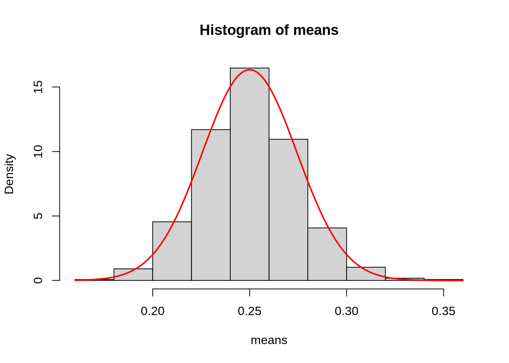
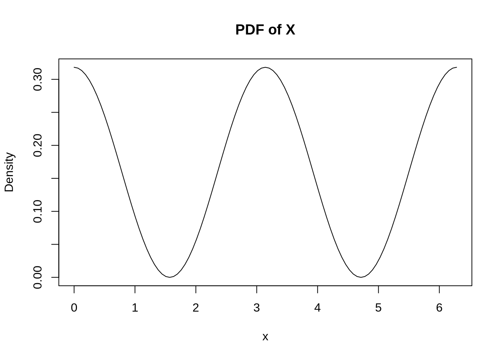
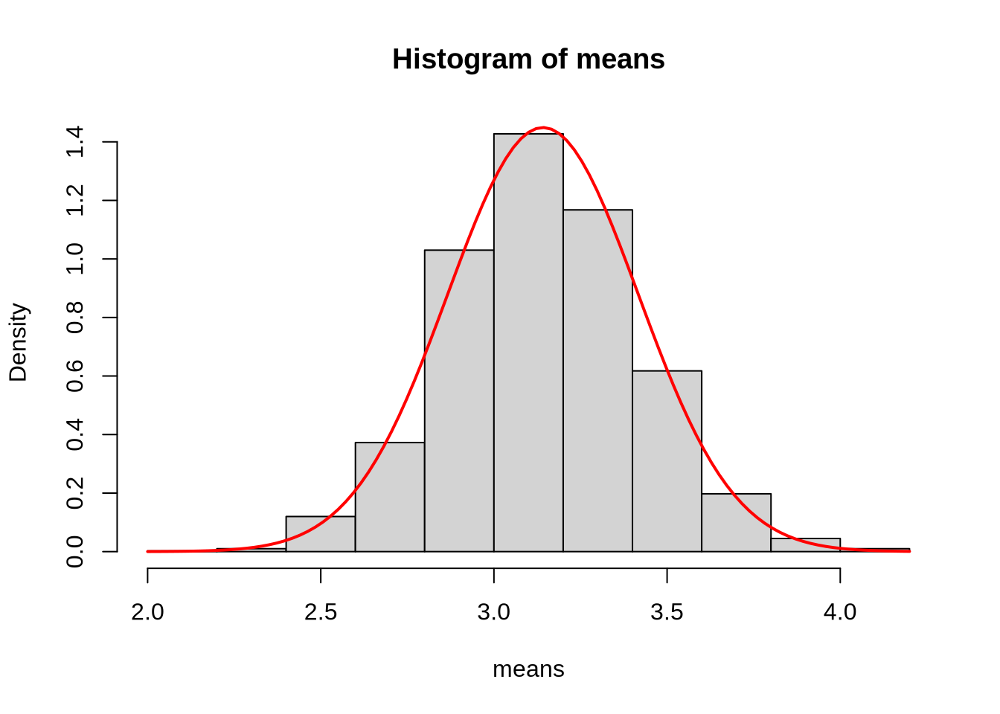

rgamma_samp_dist <- function(n_sim, sample_size, shape, rate){
# n_sim: The number of random samples generated
# sample_size: The number of draws for each sample
# shape: The shape parameter for the gamma distribution
# rate: The rate parameter for the gamma distribution
draws <- replicate(n_sim, rgamma(sample_size, shape, rate))
means <- colMeans(draws)
means
}
rbeta_samp_dist <- function(n_sim, sample_size, shape1, shape2){
# n_sim: The number of random samples generated
# sample_size: The number of draws for each sample
# shape1: The first shape parameter for the beta distribution
# shape2: The second shape parameter for the beta distribution
draws <- replicate(n_sim, rbeta(sample_size, shape1, shape2))
means <- colMeans(draws)
means
}Central Limit Theorem
The functions below can be used to simulate sampling distributions of the sample mean for the gamma and beta distributions respectively. You’ll need to run this cell to use these functions.
Question 1A (5 points)
In the code block below, use the rgamma_samp_dist function to simulate 2000 sample means from the sampling distribution when the shape for the gamma distribution is \(\alpha = 3\) and the rate is \(\lambda = 0.5\). Let the sample size for each random sample be \(n = 40\).
means <- rgamma_samp_dist(2000, 40, 3, 0.5)What are the mean and the standard deviation of the normal distribution that would be used to approximate this sampling distribution?
- The mean is: 6
- The standard deviation is: 0.5477
Now, in the code chunk below, plot a histogram of the 2000 sample means. Make sure to set the freq option to FALSE (i.e., freq = FALSE). Then, add a curve on top of the normal distribution using the curve function and the dnorm function.
For example, if I wanted to add a curve of a normal distribution with mean \(\mu = 5\) and standard deviation \(\sigma = 3\). Then I would use curve(dnorm(x, 5, 3), add = TRUE, col = 'red', lwd = 2).
hist(means, freq = FALSE)
curve(dnorm(x, 6, 0.5477), add = TRUE, col = 'red', lwd = 2)
Question 1B (5 points)
In the code block below, use the rbeta_samp_dist function to simulate 2000 sample means from the sampling distribution when the first shape for the beta distribution is \(\alpha = 2\) and the second shape parameter is \(\beta = 6\). Let the sample size for each random sample be \(n = 35\).
means <- rbeta_samp_dist(2000, 35, 2, 6)What are the mean and the standard deviation of the normal distribution that would be used to approximate this sampling distribution?
- The mean is: 0.25
- The standard deviation is: 0.0244
Now, in the code chunk below, plot a histogram of the 2000 sample means. Make sure to set the freq option to FALSE (i.e., freq = FALSE). Then, add a curve on top of the normal distribution using the curve function and the dnorm function.
hist(means, freq = FALSE)
curve(dnorm(x, 0.25, 0.0244), add = TRUE, col = 'red', lwd = 2)
Question 2 (6 points)
The function fX computes the density and the function rfX generates samples of a random variable with the following PDF:
\[ f_X(x) = \frac{\text{cos}(x)^2}{\pi} \text{ for } 0 < x < 2\pi \text{ and } 0 \text{ otherwise} \]
The last function rfX_samp_dist generates samples from the sampling distribution of the sample mean.
fX <- function(x){
cos(x)^2/pi
}
rfX <- function(n){
u_samps <- runif(n)
f_obj <- function(u){
f_inner <- function(x){
(x + sin(x) * cos(x))/(2*pi) - u
}
}
sapply(u_samps, function(u){
f_obj_u <- f_obj(u)
uniroot(f_obj_u, c(0, 2*pi), tol = 10e-10)$root
})
}
rfX_samp_dist <- function(n_sims, sample_size){
# n_sims: Number of random samples
# sample_size: Size of each sample
draws <- replicate(n_sims, rfX(sample_size))
means <- colMeans(draws)
means
}curve(fX, xlim = c(0, 2*pi), main = "PDF of X", xlab = "x", ylab = "Density")
First, find the mean and standard deviation of the normal distribution that would be used to approximate the sampling distribution of the sample means when samples are drawn from the above distribution. Assume the sample size is \(n = 50\).
- The mean is: 3.1416 (or \(\pi\))
- The standard deviation is: 0.2753 (or \(\sqrt{\frac{\frac{1}{2} + \frac{\pi^2}{3}}{50}}\))
Note: You may use the integrate function to get approximate values for \(\text{E}[X]\) and \(\text{SD}[X]\) or you may find closed-form solutions for these. Whichever you prefer.
Second, generate samples from the sampling distribution of the sample mean using rfX_samp_dist and then plot a histogram of these samples. Finally, add a curve of the normal distribution used to approximate the sampling distribution.
Note: Generate 2000 samples, each of size \(n = 50\). This may take a couple of seconds. Also, remember to use freq = FALSE.
n <- 50
mu_xbar <- pi
sigma_xbar <- sqrt(1/2 + pi^2/3)/sqrt(n)
means <- rfX_samp_dist(2000, n)
hist(means, freq = FALSE)
curve(dnorm(x, mu_xbar, sigma_xbar),
add = TRUE, col = 'red', lwd = 2)
Question 3 (4 points)
Consider the sampling distribution of the sample mean from Question 1A. In the code block below, compute the following probabilities using the Central Limit Theorem:
- \(P(\bar{X} > 5.5)\)
- \(P(\bar{X} \leq 7)\)
alpha <- 3
lambda <- 0.5
n <- 40
mu_xbar <- alpha/lambda
sigma_xbar <- sqrt(alpha/(n*lambda^2))
1-pnorm(5.5, mu_xbar, sigma_xbar)[1] 0.8193448pnorm(7, mu_xbar, sigma_xbar)[1] 0.9660554Now, in the code chunk below, compute these same probabilities exactly using the gamma distribution.
- \(P(\bar{X} > 5.5)\)
- \(P(\bar{X} \leq 7)\)
1-pgamma(n*5.5, n*alpha, lambda)[1] 0.8182947pgamma(n*7, n*alpha, lambda)[1] 0.9610659Question 4 (2 points)
Consider the sampling distribution obtained in Question 2. In the code chunk below, use the normal approximation to compute the following probabilities:
- \(P(\bar{X} \leq 2.9)\)
- \(P(2.8 \leq \bar{X} \leq 3.2)\)
n <- 50
mu_xbar <- pi
sigma_xbar <- sqrt(1/2 + pi^2/3)/sqrt(n)
pnorm(2.9, mu_xbar, sigma_xbar)[1] 0.1901023pnorm(3.2, mu_xbar, sigma_xbar) - pnorm(2.8, mu_xbar, sigma_xbar)[1] 0.476654